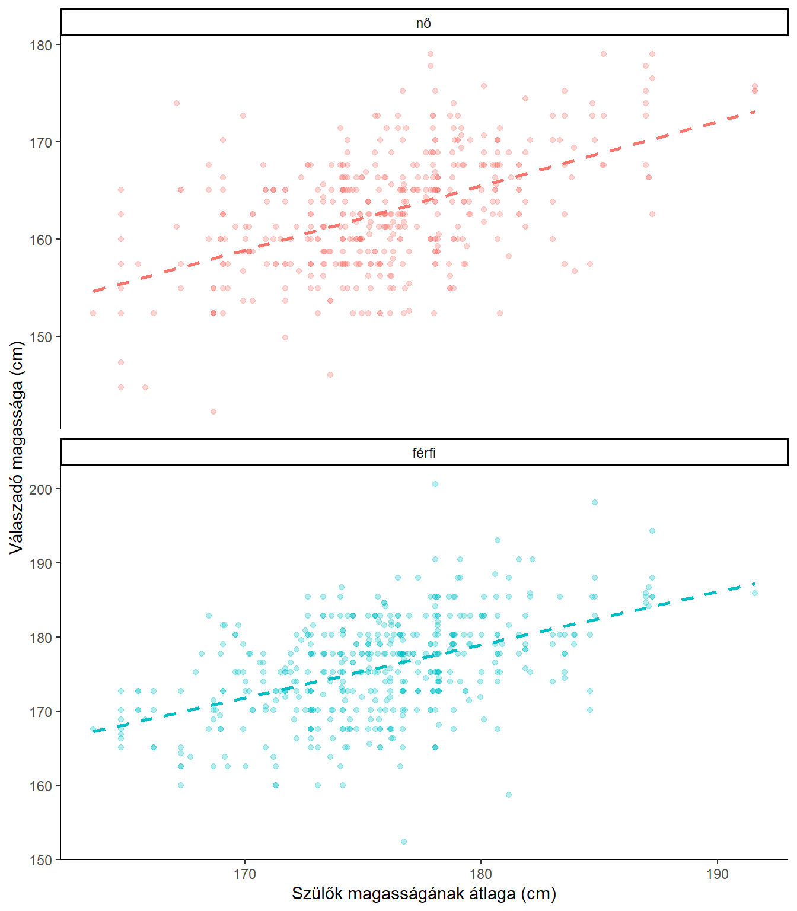
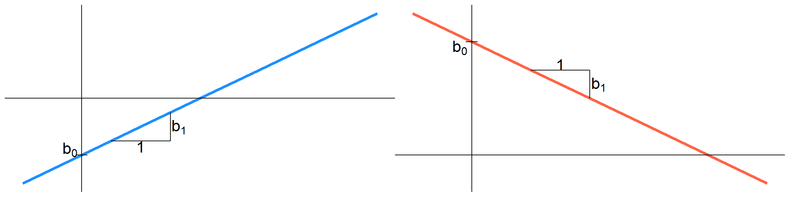

Most teszünk egy kis kitérőt: míg eddig hipotézisvizsgálati
módszereket néztünk (t-próba és társai, χ²-próbák, korreláció), addig
most egy modellezést fogunk megnézni, vagyis nem egyszerűen arra leszünk
kíváncsiak, hogy összefügg-e két változó, hanem arra, hogy az egyik
(vagy néhány) változó ismeretében milyen modellel tudjuk megbecsülni egy
függő változó értékét.
A korrelációnál már beszéltünk arról, hogy ha két változó lineárisan
összefügg, akkor a két változó kapcsolatát ábrázoló pontfelhő jellemzően
többé-kevésbé (minél erősebb az összefüggés, annál inkább) illeszkedik
egy egyeneshez.
Emlékeztetőül álljon itt ismét az ott bemutatott ábra a férfiak és nők,
illetve szüleik magassága közötti összefüggésről:
## Warning: `guides(<scale> = FALSE)` is deprecated. Please use `guides(<scale> =
## "none")` instead.
Látható, hogy mindkét ábrán a szaggatott egyenes viszonylag jól jellemzi a két változó közötti kapcsolatot. Ugyan a pontok nagy része nem az egyenesen fekszik, de viszonylag egyenlően oszlanak meg az egyenesek két oldalán. A lineáris regresszió, akárcsak a Pearson-féle korrelációs együttható akkor használható jól, ha két változó között feltételezhetően ilyen lineáris kapcsolat van. Most viszont nem azt nézzük, hogy van-e kapcsolat a populációban is, és hogy az milyen erős, hanem ezeknek az egyeneseknek a képletét fogjuk keresni.
A regresszió és a korreláció sok tekintetben hasonló (a kiszámítás
menetében is az lesz), sok tekintetben viszont más:
- A korrelációnál arra voltunk kíváncsiak, összefügg-e két változó, és
ha igen, milyen irányú és erősségű az összefüggés. - A regressziónál egy
modellt fogunk kapni, amely ezt a kapcsolatot minél jobban leírja. A
kapott modell arra is alkalmas lesz, hogy valakinél előrejelezzük,
milyen értéket vesz fel egy változón, a modellbe bevont magyarázó
változók ismeretében.
A lineáris regresszió függő változója csak intervallum- vagy arányskála
mérési szintű lehet. (Nominális és ordinális változókra ehhez hasonló
módszerek, pl. a logisztikus regresszió használható.)
Független változó lehet
Az egyenesek, lineáris függvények képlete a következőképpen néz ki:
\(y = a*x +b\).
Mi a regresszió esetében ezt kicsit másképp fogjuk írni:
\[y = b_0 + b_1*x\]
Vagyis a helyett \(b_1\),
b helyett pedig \(b_0\)
szerepel a képletben. Ez majd főleg akkor lesz hasznosabb jelölés, ha
több független változót is bevonunk a modellbe, mert ekkor majd ezek a
\(b_2\), \(b_3\), … \(b_i\) paramétereket kapják.
Nézzük meg, mit jelentenek az egyes paraméterek:

Tegyük fel, hogy egy online kurzus résztvevőivel két tesztet oldatnak meg. Egy belépőtesztet, amely a kurzus előtti tudásukat méri fel, és egy kilépő tesztet, amely a kurzus során megszerzett tudást. Állítsunk fel egy modellt a második teszt eredményének becslésére az első teszt eredménye alapján! Az alábbi táblázat tartalmazza a résztvevők 15 fős reprezentatív mintájának eredményeit, a grafikon pedig mindezeket grafikusan jeleníti meg.
| Sorszám | 1. | 2. | 3. | 4. | 5. | 6. | 7. | 8. | 9. | 10. | 11. | 12. | 13. | 14. | 15. |
| 1. teszt | 15 | 20 | 25 | 30 | 27 | 18 | 19 | 22 | 9 | 14 | 12 | 15 | 17 | 19 | 23 |
| 2. teszt | 21 | 24 | 28 | 29 | 25 | 20 | 17 | 22 | 11 | 13 | 10 | 16 | 21 | 25 | 18 |
Látszik, hogy a pontok nem teljesen véletlenszerűen helyezkednek el,
hanem a magasabb x értékekhez (több pont az első teszten) magasabb y
értékek (több pont a második teszten), míg az alacsonyabb x értékekhez
jellemzően alacsonyabb y értékek tartoznak. Feltételezhető tehát, hogy
van valamilyen pozitív kapcsolat a két változó között. Ezt korrelációval
vizsgáltuk. A célunk most az, hogy egy olyan modellt állítsunk fel,
amellyel az első teszt eredményéből meg tudjuk becsülni a második teszt
eredményét. Az ábra alapján feltételezhető, hogy a két eredmény közötti
kapcsolat jól jellemezhető egy egyenessel, ezért (egyváltozós) lineáris
regressziót fogunk alkalmazni.
A modellünk az alábbi egyenes lesz:
A regressziós egyenes pontjai adják meg, hogy egy-egy x értékre
milyen becslést adunk (zöld pontok). Vagyis az egyenes pontjainak x
koordinátája a független változó értékét jelöli, az y koordináta pedig
az ehhez az értékhez tartozó becslést. A regressziós egyenes
paramétereit úgy adjuk meg, hogy minimalizáljuk az egyenesen lévő pontok
(a becslések) és a tényleges értékek (kék pontok) közötti y változóban
mért (függőleges) eltérések négyzetösszegét (a piros négyzetek
területének összegét). Ez, hogy nem az eltérések abszolút értékével,
hanem a négyzetösszegével dolgozunk, nem újdonság, ez történt a szórás,
a χ² próbák és a korreláció becslése esetében is, és lesz még rá példa a
jövőben is.
A regressziós modell ezeknek a négyzetösszegeknek a
minimalizálására törekszik. Ezért hívják angolul OLS
(Ordinary Least
Squares) regressionnek is. Ezen
az oldalon megnézhetik, hogyan követi az egyenes a pontok
változását, hogy minimalizálja a négyzetek területösszegét. Ha itt az
I-es quartettet választják, akkor olyan ponthalmazt kapnak, amelyre jól
alkalmazható a lineáris regresszió. Az egérrel át tudják helyezni az
egyes pontokat. Ha már itt járnak, figyeljék meg azt is, hogy a
vízszintesen két végen lévő pontok fel-le mozgatása jobban befolyásolja
az eredményt, mint a középtájt lévő pontoké. Ezeknek a pontoknak nagyobb
a hatóerejük (leverage).
A II-IV. quartettek pedig olyan eseteket mutatnak, amikor a kapcsolat
nem lineáris (II), amikor egy kilógó érték “rondít bele” az egyébként
tökéletesen lineáris kapcsolatban (III), illetve amikor egy kirívó eset
kivételével nincs is kapcsolat a két változó között (IV).
Kitérő: Ezek egyébként Francis Anscombe statisztikus példái
(1973), amelyeken azt illusztrálta, hogy maguk a regresszió mutatói
akkor is lehetnek (szinte) azonosak, ha egyébként a változók közötti
kapcsolat nagyon eltérő. Ezért nem szabad vaktában regressziót
használni, hanem például egy pontdiagrammal érdemes meggyőződni róla,
hogy a kapcsolat valóban lineáris, illetve az esetleges kilógó értékeket
is érdemes elemzés előtt megvizsgálni. Kitérő vége.
Nézzünk néhány fontos jelölést:
\(x_i\) jelöli majd, hogy az i. válaszadó (általánosabban, hiszen nem csak emberekről lehet szó, megfigyelési egység) milyen értéket vesz fel az x változón (példában: hány pontot szerzett az első teszten)
\(y_i\) fogja mindig jelölni az
i. megfigyelési egység tényleges y értékét (a példában: hány pontot
kapott a második teszten).
\(\hat{y}_i\) fogja jelölni az
i. megfigyelési egységre adott becslést (a példában:
hány pontra számíthat valaki a modell alapján, aki az első teszten \(x_i\) pontot szerzett)
\[\hat{y}_i=b_0+b_1*x_i\]
A fentiekből kikövetkeztethető, hogy \(b_0\) a regressziós becslésnél azt fogja jelenteni, várhatóan milyen y értéket vesz fel valaki/valami (mennyi lesz a becslés ebben az esetben), ha az x változón 0 az értéke (a példában: hány pontra számíthat valaki a második teszten, ha az elsőn 0 pontot szerzett).
\(b_1\) pedig azt fogja jelölni, mekkora várható változást eredményez y-ban, ha x változó értéke 1 egységnyit változik (a példában: ha valaki az első tesztre egy ponttal többet kapott, mint valaki más, mennyivel számíthat több/kevesebb pontra a második teszten)
\(e_i\) jelöli a
hibatagokat/reziduumokat, vagyis, hogy
mekkora a különbség a tényleges y érték (\(y_i\)) és a becslés (\(\hat{y}_i\)) között. Ezek között pozitív és
negatív értékek is lesznek. Várható értékük 0. Kiszámításuk:
\[e_i = y_i - \hat{y}_i\]
Ebből \(y_i\) felírható úgy,
hogy:
\[\begin{aligned}
y_i &= \hat{y}_i + e_i \\
y_i &= b_0 + b_1*x_i + e_i
\end{aligned}\]
Nézzünk néhány alapfogalmat:
Az y változó más-más értékeket vesz fel az egyes megfigyelési egységek esetében, tehát van valamekkora szórása. Az egyes kitöltők nem ugyanannyi pontot kaptak a kilépő teszten. Ha ugyanannyit kaptak volna, azon nincs mit elemezni. Ennek a szórásnak a négyzetét nevezzük varianciának. A regresszióval az a célunk, hogy ennek a varianciának minél nagyobb részét megmagyarázzuk. Tegyük fel, hogy erre csak az első teszt eredményét szeretnénk felhasználni. Arra vagyunk kíváncsiak, hogy a kilépéskor mért különbségek mekkora része olyan, amit magukkal hoztak a résztvevők (már az első teszten is különböztek). A gyakorlatban a variancia helyett az eltérések négyzetösszegével fogunk dolgozni.
A teljes négyzetösszeg számszerűsíti, mennyire
térnek el egymástól a megfigyelési egységek az y változó
tekintetében:
\[SST =
\sum_{i=1}^{N}{\left(y_i-\overline{y}\right)^2}\]
Ez a teljes négyzetösszeg a regressziós elemzés révén két részre
bonható: van az eltéréseknek egy része, amit meg tudunk magyarázni:
nevezzük regressziós négyzetösszegnek. Ezt
számszerűsíti a becsléseknek az y átlagától való eltérése (az y átlaga
egyben a becslések átlaga is):
\[SSR =
\sum_{i=1}^{N}{\left(\hat{y}_i-\overline{y}\right)^2}\]
A másik rész pedig az, amit nem tudunk megmagyarázni. Ezt
számszerűsíti a becsült értékeknek a tényleges értékektől való
eltéréseinek négyzetösszege:
\[SSH =
\sum_{i=1}^{N}{\left(y_i-\hat{y}_i\right)^2}=\sum_{i=1}^{N}{e_i^2}\]
A teljes négyzetösszeg a regressziós és a reziduális (hiba-)
négyzetösszegnek az összege:
\[SST = SSR + SSH\]
A megmagyarázott résznek az arányát a teljes négyzetösszeghez
képest nevezzük determinációs együtthatónak, amely a
modell illeszkedését méri. Azt fejezi ki, hogy a
független változó(k) segítsétével a függő változó varianciájának hány
százalékát sikerült megmagyarázni. Ez a mutató 0 és 1 (másképpen 0% és
100%) közötti értékeket vehet fel. 0-t vesz fel, ha a két változó
teljesen független, ezért mindenkit az \(\overline{y}\) átlaggal becsülünk. Ekkor az
\(\overline{y}\)-tól való eltérések
egyenlők a hibatagokkal, tehát SST = SSH. 1-et akkor vesz fel, ha minden
pont a regressziós egyenesen fekszik. Ekkor a hibatagok értéke 0, hiszen
a becslések és a tényleges értékek egybeesnek. Ilyenkor SST = SSR.
Általában a két végkpont közötti \(R^2\) értékeket kapunk. Az \(R^2\) értékét az előző egyenlőség miatt
kétféleképpen is kiszámíthatjuk:
\[R^2=\frac{SSR}{SST}=1-\frac{SSH}{SST}\]